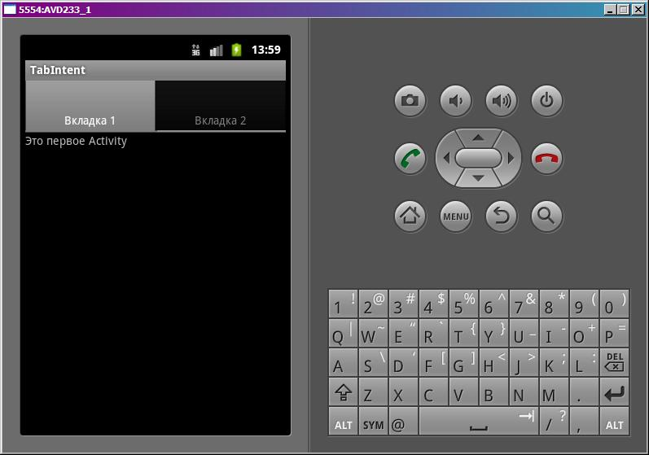
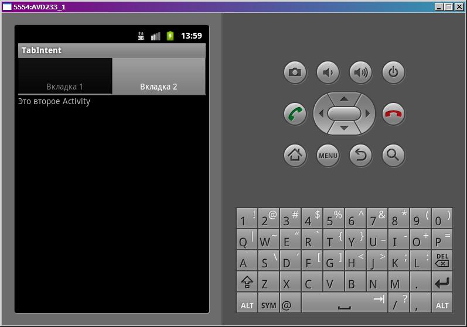

В этом уроке:
- используем Activity в качестве содержимого вкладки
- используем TabActivity
В качестве вкладки можно использовать Activity. Для этого существует реализация метода setContent, которая принимает на вход Intent. А в Intent мы прописываем, какое Activity нам нужно.
При использовании Intent и вкладок есть нюанс. Наше основное Activity, которое содержит TabHost должно наследовать не android.app.Activity как обычно, а android.app.TabActivity. В этом случае нам не надо заморачиваться с дополнительной инициализацией для работы с Intent.
Создадим проект:
Project name: P0771_TabIntent
Build Target: Android 4.0
Application name: TabIntent
Package name: ru.startandroid.develop.p0771tabintent
Create Activity: MainActivity
Пропишем тексты в strings.xml:
<?xml version="1.0" encoding="utf-8"?>
<resources>
<string name="app_name">TabIntent</string>
<string name="text_activity1">Это первое Activity</string>
<string name="text_activity2">Это второе Activity</string>
</resources>Экран main.xml:
<?xml version="1.0" encoding="utf-8"?>
<LinearLayout
xmlns:android="http://schemas.android.com/apk/res/android"
android:layout_width="fill_parent"
android:layout_height="fill_parent"
android:orientation="vertical">
<TabHost
android:id="@android:id/tabhost"
android:layout_width="match_parent"
android:layout_height="match_parent">
<LinearLayout
android:layout_width="match_parent"
android:layout_height="match_parent"
android:orientation="vertical">
<TabWidget
android:id="@android:id/tabs"
android:layout_width="match_parent"
android:layout_height="wrap_content">
</TabWidget>
<FrameLayout
android:id="@android:id/tabcontent"
android:layout_width="match_parent"
android:layout_height="match_parent">
</FrameLayout>
</LinearLayout>
</TabHost>
</LinearLayout>Менять id у TabHost в случае использования android.app.TabActivity нельзя. Иначе система просто не найдет TabHost.
FrameLayout не заполняем, т.к. мы не будем использовать его компоненты для содержимого вкладок. Мы будем туда целые Activity грузить.
Создадим пару Activity.
layout-файлы
one.xml:
<?xml version="1.0" encoding="utf-8"?>
<LinearLayout
xmlns:android="http://schemas.android.com/apk/res/android"
android:layout_width="match_parent"
android:layout_height="match_parent"
android:orientation="vertical">
<TextView
android:layout_width="wrap_content"
android:layout_height="wrap_content"
android:text="@string/text_activity1">
</TextView>
</LinearLayout>two.xml:
<?xml version="1.0" encoding="utf-8"?>
<LinearLayout
xmlns:android="http://schemas.android.com/apk/res/android"
android:layout_width="match_parent"
android:layout_height="match_parent"
android:orientation="vertical">
<TextView
android:layout_width="wrap_content"
android:layout_height="wrap_content"
android:text="@string/text_activity2">
</TextView>
</LinearLayout>Классы
OneActivity.java:
package ru.startandroid.develop.p0771tabintent;
import android.app.Activity;
import android.os.Bundle;
public class OneActivity extends Activity {
protected void onCreate(Bundle savedInstanceState) {
super.onCreate(savedInstanceState);
setContentView(R.layout.one);
}
}TwoActivity.java:
package ru.startandroid.develop.p0771tabintent;
import android.app.Activity;
import android.os.Bundle;
public class TwoActivity extends Activity {
protected void onCreate(Bundle savedInstanceState) {
super.onCreate(savedInstanceState);
setContentView(R.layout.two);
}
}Не забываем прописать их в манифесте.
Кодим MainActivity.java:
package ru.startandroid.develop.p0771tabintent;
import android.app.TabActivity;
import android.content.Intent;
import android.os.Bundle;
import android.widget.TabHost;
public class MainActivity extends TabActivity {
/** Called when the activity is first created. */
@Override
public void onCreate(Bundle savedInstanceState) {
super.onCreate(savedInstanceState);
setContentView(R.layout.main);
// получаем TabHost
TabHost tabHost = getTabHost();
// инициализация была выполнена в getTabHost
// метод setup вызывать не нужно
TabHost.TabSpec tabSpec;
tabSpec = tabHost.newTabSpec("tag1");
tabSpec.setIndicator("Вкладка 1");
tabSpec.setContent(new Intent(this, OneActivity.class));
tabHost.addTab(tabSpec);
tabSpec = tabHost.newTabSpec("tag2");
tabSpec.setIndicator("Вкладка 2");
tabSpec.setContent(new Intent(this, TwoActivity.class));
tabHost.addTab(tabSpec);
}
}Наше Activity наследует TabActivity. Это дает нам возможность получить TabHost методом getTabHost. Нам не нужно самим искать его на экране. Также этот замечательный метод выполняет за нас обычную инициализацию, нам не надо вызывать метод setup, как на прошлом уроке. И кроме обычной инициализации, этот метод выполняет подготовку для работы с Activity, как содержимым вкладок.
Ну а далее вам все знакомо с прошлого урока. Создаем вкладки, указываем имена. В методе setContent вместо содержимого из FrameLayout мы даем Intent, указывающий на необходимое нам Activity.
Все сохраняем и запускаем приложение.
Первая вкладка с OneActivity

Вторая вкладка с TwoActivity

А как отрабатывают события Activity LifeCycle? При первом показе первой вкладки срабатывают три метода OneActivity: onCreate, onStart, onResume. Переключаемся на вторую вкладку – срабатывает onPause в OneActivity, а потом три метода TwoActivity: onCreate, onStart, onResume. И далее при переключениях между вкладками одна уходит в onPause, другая возвращается в onResume.